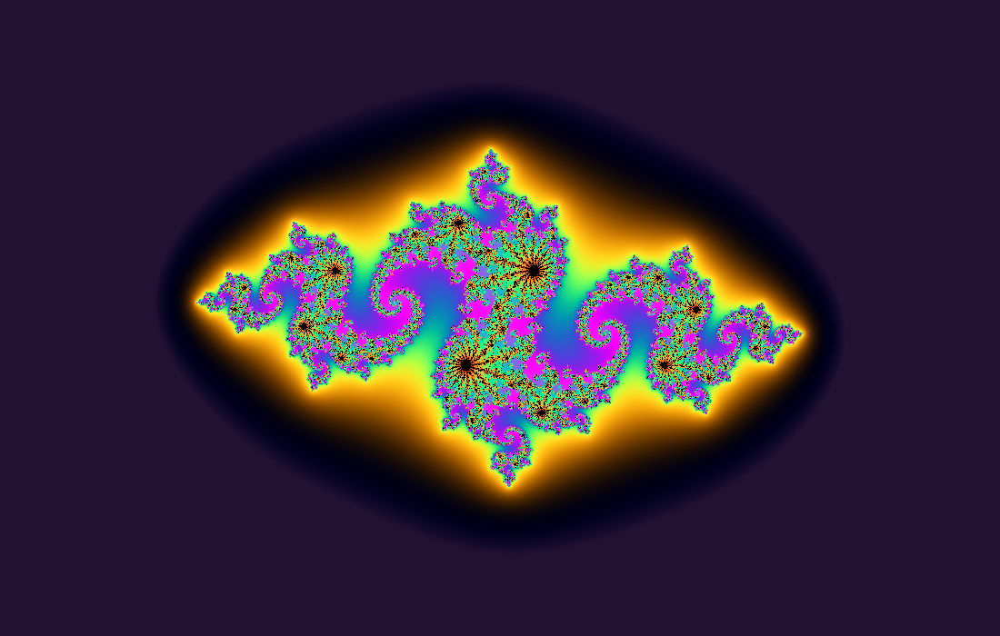
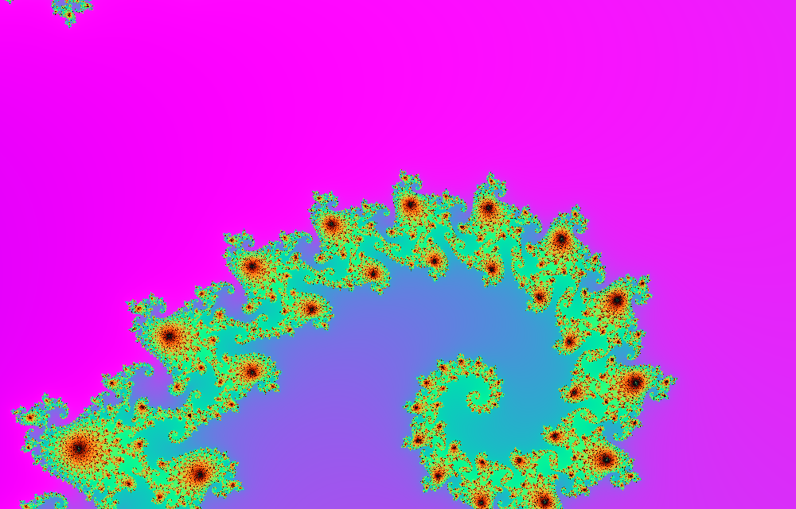
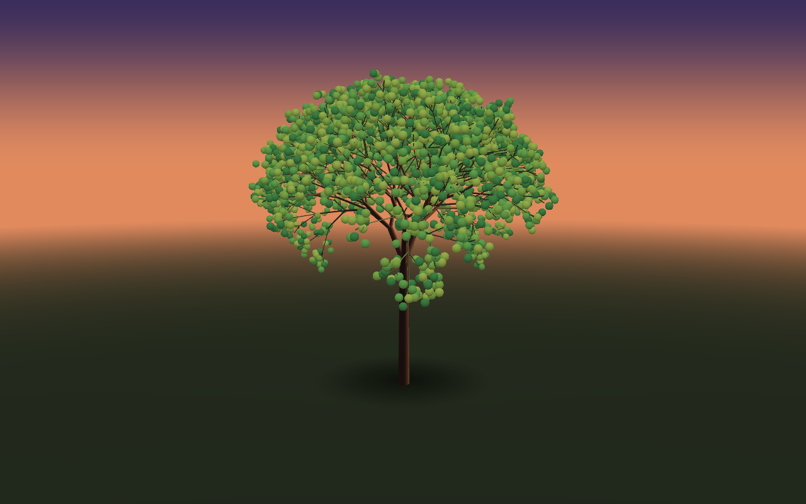
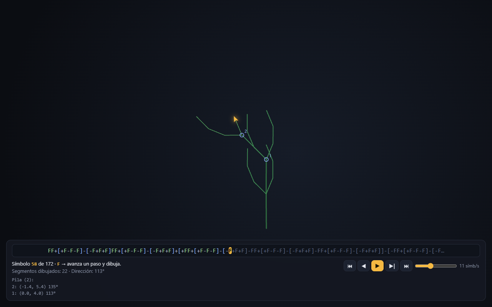
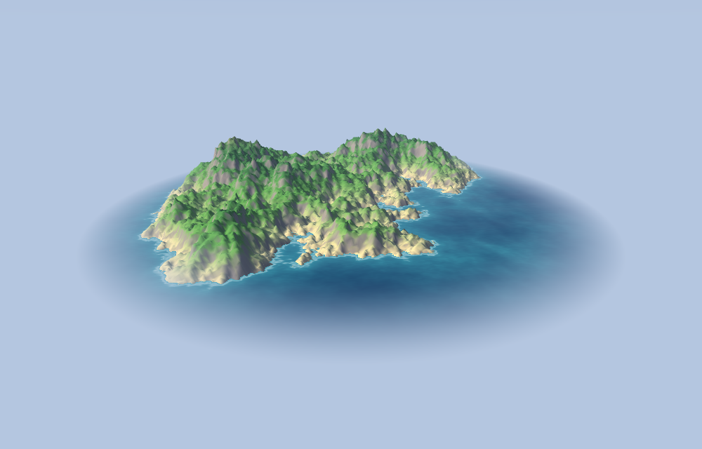
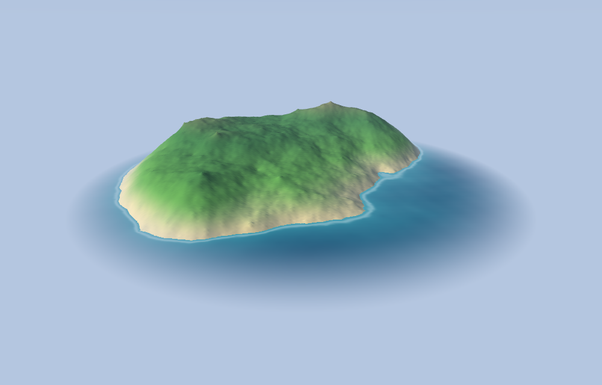
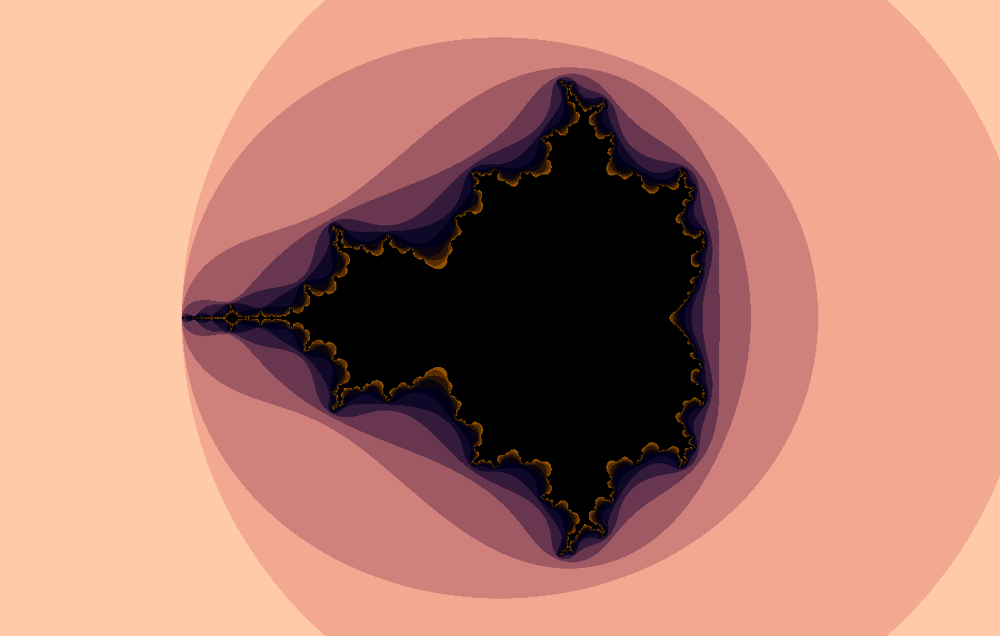
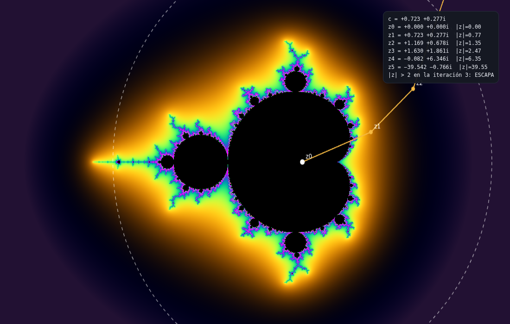

Julia: un cambio pequeño de c

c = −0,8 + 0,156i · «Dragón»

c = i · «Dendrita»

c = −0,123 + 0,745i · «Conejo»
Misma fórmula z → z² + c; solo cambia c y la forma es otra.
Computación Visual · 8.º ciclo · Grupo 8
Universidad Nacional Mayor de San Marcos · Ingeniería de Sistemas
Exposición: 02/12/2026
Costas, nubes, montañas y ramas no son círculos ni cuadrados. La geometría fractal les da un lenguaje matemático (Mandelbrot, 1967).
Cada una vuelve a aparecer en los módulos y se define en los capítulos del informe.
| # | Módulo | Idea en una frase |
|---|---|---|
| 1 | Conjuntos de escape | Iterar z² + c y ver quién escapa |
| 2 | IFS y juego del caos | Saltos al azar que dibujan el atractor |
| 3 | L-systems | Reescribir texto y dibujarlo con una tortuga |
| 4 | Terreno fractal | Subdividir y desplazar para crear montañas |
| 5 | Dimensión fractal | Contar cajas para medir la rugosidad |
z → z² + c
Pachas Auris, Pieers Fernando

c = −0,8 + 0,156i · «Dragón»
c = i · «Dendrita»
c = −0,123 + 0,745i · «Conejo»
Misma fórmula z → z² + c; solo cambia c y la forma es otra.

Cerna Aguilar, Emily Andrea
F avanza, + − giran, [ ] ramifican& ^ \ / inclinan y rotan la rama (WebGL)
Flores Cortez, Valeria Alexandra

Paso a paso: [ guarda la posición en una pila y ] vuelve a ella

Curva de Hilbert 3D: una sola curva por los 512 puntos del cubo
La cadena crece exponencialmente: la planta pasa de 4 096 a 32 768 segmentos en una sola generación.

Sihuacollo Sierra, Keyla Noemi

r = 0,40 · D = 2
r = 0,59 · D ≈ 2,24

r = 0,80 · D ≈ 2,68
Misma semilla, solo cambia r. A mayor rugosidad, mayor dimensión fractal de la superficie.

Puente Carmen, Rodrigo Joaquin
Así comprobamos que el cálculo es correcto y que los módulos forman un conjunto, no cinco demos sueltas.
App: pieersx.github.io/geometria-fractal
Plan B: video de 2–3 minutos con el recorrido por los cinco módulos.
| Técnica | Fortaleza | Debilidad |
|---|---|---|
| Conjuntos de escape | Paralelismo en GPU | Precisión numérica al ampliar |
| IFS y juego del caos | Compacto, base matemática sólida | Convergencia aleatoria |
| L-systems | Modela bien la ramificación | Crecimiento exponencial |
| Terreno fractal | Paisajes con pocos parámetros | Poco realismo geológico |
| Box-counting | Mide imágenes reales | Depende de la binarización |
Barnsley, M. F., & Demko, S. (1985). Iterated function systems and the global construction of fractals. Proceedings of the Royal Society of London. A, 399(1817), 243–275. https://doi.org/10.1098/rspa.1985.0057
Fournier, A., Fussell, D., & Carpenter, L. (1982). Computer rendering of stochastic models. Communications of the ACM, 25(6), 371–384. https://doi.org/10.1145/358523.358553
Liebovitch, L. S., & Toth, T. (1989). A fast algorithm to determine fractal dimensions by box counting. Physics Letters A, 141(8–9), 386–390. https://doi.org/10.1016/0375-9601(89)90854-2
Lindenmayer, A. (1968). Mathematical models for cellular interactions in development I. Journal of Theoretical Biology, 18(3), 280–299. https://doi.org/10.1016/0022-5193(68)90079-9
Mandelbrot, B. (1967). How long is the coast of Britain? Statistical self-similarity and fractional dimension. Science, 156(3775), 636–638. https://doi.org/10.1126/science.156.3775.636
Lista completa en el informe.
Grupo 8 · Computación Visual
Las páginas siguientes son el anexo de respaldo: teoría, ejemplos con números y resultados.
Material para consultar durante las preguntas y para leer después. No se expone.

Construir desde cero: iteración 12

Órbita de un punto que escapa
Sin iteraciones todo es negro. Cada iteración añade una capa; el punto escapa cuando su órbita sale de |z| = 2.
| Iteración | Cálculo | zₙ | |zₙ| > 2 |
|---|---|---|---|
| 0 | valor inicial | 0 | no |
| 1 | 0² + 1 | 1 | no |
| 2 | 1² + 1 | 2 | no |
| 3 | 2² + 1 | 5 | sí |
| 4 | 5² + 1 | 26 | sí |
c = 1 escapa en la iteración 3: se pinta con el color de esa iteración.
c = −1 pertenece: la órbita es 0 → −1 → 0 → −1… y nunca crece (negro).
| Resolución | CPU (JavaScript), ms | GPU (WebGL), ms | Aceleración |
|---|---|---|---|
| 800 × 600 | 37,9 | 1,5 | ≈ 25× |
| 1920 × 1080 | 128 | 3,2 | ≈ 40× |
Misma imagen (200 iteraciones, radio de escape 16), promedio de 10 corridas tras una de calentamiento. La GPU casi no sufre al subir de 480 000 a 2 073 600 píxeles porque calcula miles de píxeles en paralelo.
Equipo: Ryzen 5 3600X, GeForce GTX 1650, Chromium 156, Windows 11 (25/11/2026). La CPU calcula con 64 bits y la GPU con 32: se compara velocidad, no exactitud.
| Paso | Vértice | Cálculo con x′ = r·x + (1 − r)·v | Punto nuevo |
|---|---|---|---|
| 0 | punto inicial | (0,100; 0,100) | |
| 1 | B = (1; 0) | 0,5·0,1 + 0,5·1 y 0,5·0,1 + 0,5·0 | (0,550; 0,050) |
| 2 | C = (0,5; 0,866) | 0,5·0,55 + 0,5·0,5 y 0,5·0,05 + 0,5·0,866 | (0,525; 0,458) |
| 3 | A = (0; 0) | 0,5·0,525 y 0,5·0,458 | (0,263; 0,229) |
Con r = 1/2 el punto recorre la mitad del camino hacia el vértice elegido. Queda dentro del triángulo y no sale: por eso se descartan los primeros 20 puntos sin afectar el dibujo.
| Papel | a | b | c | d | e | f | Probabilidad |
|---|---|---|---|---|---|---|---|
| Tallo | 0 | 0 | 0 | 0,16 | 0 | 0 | 1 % |
| Helecho reducido | 0,85 | 0,04 | −0,04 | 0,85 | 0 | 1,6 | 85 % |
| Hoja izquierda | 0,2 | −0,26 | 0,23 | 0,22 | 0 | 1,6 | 7 % |
| Hoja derecha | −0,15 | 0,28 | 0,26 | 0,24 | 0 | 0,44 | 7 % |
Cada transformación es x′ = a·x + b·y + e e y′ = c·x + d·y + f. Siete números por regla bastan para dibujar una hoja reconocible.
Ejemplo: (0; 0) → (0; 1,6) → (0,064; 2,960) con la regla 2; con la regla 3 sobre ese punto resulta (−0,757; 2,266), a la izquierda del tallo.
| Símbolo | Acción | Rumbo | Posición |
|---|---|---|---|
| inicio | 0° | (0; 0) | |
F | avanza 1 | 0° | (1; 0) |
+ | gira 60° a la izquierda | 60° | (1; 0) |
F | avanza 1 | 60° | (1,5; 0,866) |
− − | gira 120° a la derecha | −60° | (1,5; 0,866) |
F | avanza 1 | −60° | (2; 0) |
+ | gira 60° a la izquierda | 0° | (2; 0) |
F | avanza 1 | 0° | (3; 0) |
Un trazo recto de longitud 3 se convierte en 4 segmentos con un pico: cada generación alarga la curva por 4/3.
| Ejemplo | Generaciones | Símbolos | Segmentos | Tiempo, ms |
|---|---|---|---|---|
| Curva de Koch | 4 | 596 | 256 | 0,2 |
| Curva de Koch | 6 | 9 556 | 4 096 | 1,6 |
| Triángulo de Sierpinski | 8 | 13 121 | 6 561 | 1,4 |
| Curva del dragón | 14 | 65 534 | 16 384 | 4,5 |
| Planta ramificada | 5 | 88 940 | 32 768 | 4,9 |
Los segmentos se multiplican por 4 en cada generación de Koch, por 3 en Sierpinski y por 2 en el dragón. El tiempo sigue al tamaño de la cadena (unos 15 millones de símbolos por segundo). La app limita la cadena a 1 500 000 símbolos para proteger al navegador.
Desplazamientos supuestos para poder hacer las cuentas a mano; en la app los fija la semilla.
| r | H = −log₂ r | D = 3 − H |
|---|---|---|
| 0,40 | 1,32 | 2 (liso) |
| 0,59 | 0,76 | ≈ 2,24 |
| 0,80 | 0,32 | ≈ 2,68 |
Es una estimación teórica de la superficie, no una medición.
| Lado de caja s (px) | Cajas N(s) | ln(1024/s) | ln N(s) |
|---|---|---|---|
| 8 | 468 | 4,852 | 6,148 |
| 16 | 206 | 4,159 | 5,328 |
| 32 | 84 | 3,466 | 4,431 |
| 64 | 34 | 2,773 | 3,526 |
Pendiente del ajuste: D = 1,264 con R² = 0,9995. Teórica: ln 4 / ln 3 ≈ 1,262.
Con solo las dos cajas más pequeñas la pendiente es 1,18; con las dos más grandes, 1,30. Por eso se ajusta sobre varias escalas y se declaran.
| Figura | D teórica | D medida | Error |
|---|---|---|---|
| Línea recta | 1,000 | 0,988 | 1,2 % |
| Curva de Koch | 1,262 | 1,264 | 0,2 % |
| Triángulo de Sierpinski | 1,585 | 1,535 | 3,2 % |
| Cuadrado relleno | 2,000 | 1,936 | 3,2 % |
Imagen de 1 024 px, cajas de 8 a 64 px, R² > 0,999 en las cuatro. El error mayor aparece cuando la figura ocupa pocas cajas grandes y el resultado depende de la posición de la malla. Con cajas de 4 a 128 px, Koch da 1,260 y el cuadrado 1,892: el rango de escalas siempre se indica.
| Módulo | Caso práctico |
|---|---|
| 1 · Conjuntos de escape | Texturas y arte procedural; prueba de rendimiento de GPU |
| 2 · IFS y juego del caos | Vegetación y formas naturales; base de la compresión fractal de imágenes |
| 3 · L-systems | Vegetación procedural en videojuegos, cine y simulación |
| 4 · Terreno fractal | Paisajes para videojuegos, simulación y cine (Perlin, 1985) |
| 5 · Dimensión fractal | Caracterizar costas, ramificaciones y texturas de tejidos o superficies |
| Módulo | Qué se midió | Resultado |
|---|---|---|
| 2 | Juego del caos, 10⁵ · 10⁶ · 10⁷ puntos | 22 · 98 · 551 ms (≈ 18 millones de puntos por segundo) |
| 3 | Reescribir y recorrer la planta de 88 940 símbolos | 4,9 ms |
| 4 | Diamond-square, niveles 8 (257²) y 9 (513²) | 0,84 ms y 4,64 ms |
| 5 | Binarizar, contar cajas y ajustar, imagen de 1 024² | ≈ 3 ms |
Equipo: Ryzen 5 5500, 32 GB de RAM, Linux, Chromium 156 (26/11/2026). Solo cálculo en CPU: no se midió el dibujo WebGL. Los tiempos menores a 1 ms son órdenes de magnitud. No se comparan con los de la diapositiva A3, que son de otro equipo.
Barnsley, M. F., & Demko, S. (1985). Iterated function systems and the global construction of fractals. Proceedings of the Royal Society of London. A, 399(1817), 243–275. https://doi.org/10.1098/rspa.1985.0057
Fournier, A., Fussell, D., & Carpenter, L. (1982). Computer rendering of stochastic models. Communications of the ACM, 25(6), 371–384. https://doi.org/10.1145/358523.358553
Hutchinson, J. E. (1981). Fractals and self-similarity. Indiana University Mathematics Journal, 30(5), 713–747. https://doi.org/10.1512/iumj.1981.30.30055
Liebovitch, L. S., & Toth, T. (1989). A fast algorithm to determine fractal dimensions by box counting. Physics Letters A, 141(8–9), 386–390. https://doi.org/10.1016/0375-9601(89)90854-2
Lindenmayer, A. (1968). Mathematical models for cellular interactions in development I. Journal of Theoretical Biology, 18(3), 280–299. https://doi.org/10.1016/0022-5193(68)90079-9
Mandelbrot, B. (1967). How long is the coast of Britain? Statistical self-similarity and fractional dimension. Science, 156(3775), 636–638. https://doi.org/10.1126/science.156.3775.636
Perlin, K. (1985). An image synthesizer. ACM SIGGRAPH Computer Graphics, 19(3), 287–296. https://doi.org/10.1145/325165.325247
Informe completo y bitácora de uso de IA: ver el PDF del informe.